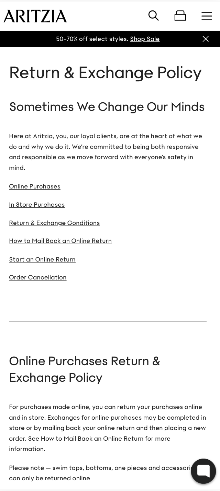

Fitt's Law
Call it Spring
Fitt's Law states that the time to move to a target depends on how big it is and on how far away it is. In design, this means that the elements that are larger and closer, are easier to interact with. This leads the interfaces to be more user-friendly. This is a great example for Fitt's law. We see that the biggest element of the page is the "New muses" section, that leads users to click on this and start shopping right away. We also see two buttons above this element that are bigger than other elements, making it easier for the user to find these buttons/information.
Whitespace and Clean Design
H & M
White space is the empty space between design elements, this emphasizes clarity and simplicity. Whitespace and Clean design enhances focus and readability. In this page, we can see that the elements have a good amount of whitespace between them, making it easier for the user to focus on the elements on the page. Thanks to this design principle, The user can receive a feeling of order, simplicity and clarity.
Visual Hierarchy
Aritzia
Visual hierarchy refers to the presentation of the elements in a design to show the importance of each element. This helps guide the user's attention through what's more important, getting an idea of the order of importance among the information/elements. In the example, we see that the size of the headers depends on their importance. For example, we see that the whole page title is the biggest text, letting the subtitles be medium-sized, and the information in small font size. Thanks to this design principle, the user can get an idea of what information is more important.